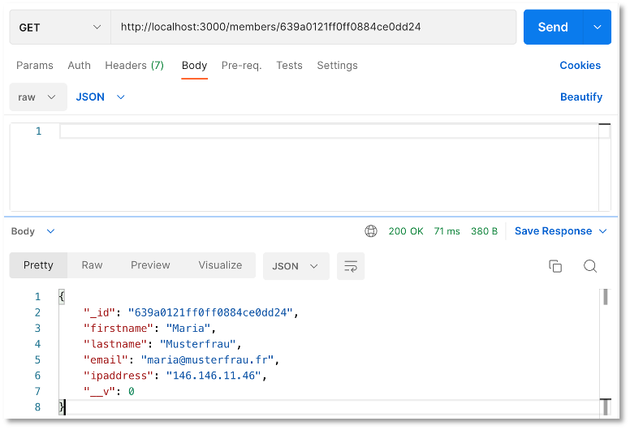

REST-API (MongoDB)¶
Die wesentlichsten Konzepte, wie Komponenten, Services und Routing für Angular-Projekte haben wir bereits kennengelernt. Ehe wir uns weiter mit dem Frontend beschäftigen, erstellen wir einen Server, der uns die Daten liefert. Derzeit haben wir unsere Mockup-Daten noch clientseitig von einem Service verwalten lassen. Das wollen wir nun ändern. Die Daten speichern wir in einer Datenbank und stellen sie über eine REST-API bereit.
Video zur Vorlesung Backend(MongoDB)
REST¶
Für diese Datenbank stellen wir die Implementierung einer Schnittstelle bereit, so dass wir die wesentlichen Datenbankanfragen darüber ausführen können. Diese wesentlichen Datenbankfragen werden mit CRUD abgekürzt, für Create, Read, Update und Delete. Das bedeutet, wir implementieren Funktionalitäten, mit denen wir einen neuen Datensatz in die Datenbank einfügen (create), aus der Datenbank auslesen (read), in der Datenbank aktualisieren (update) und aus der Datenbank löschen (delete) können.
Die Schnittstelle, die wir implementieren, ist eine sogenannte REST-API. REST steht für Representational State Transfer und basiert auf einigen wenigen Prinzipien:
- Alles wird als eine Ressource betrachtet, z.B.
book. - Jede Ressource ist durch URIs (Uniform Resource Identifiers) eindeutig identifizierbar, z.B.
http://localhost/books. - Es werden die Standard-HTTP-Methoden verwendet, also
GET,POST,PUT,UPDATE. - Ressourcen können in verschiedenen Formaten vorliegen, z.B. in HTML, XML, JSON,
- Die Kommunikation ist zustandslos. Jede einzelne HTTP-Anfrage wird komplett isoliert bearbeitet. Es gibt keinerlei Anfragehistorie.
Das bedeutet, wir erstellen ein Backend (einen REST-Server), an den HTTP-Anfragen mit der eindeutig identifizierbaren Ressource gestellt werden. Das Backend erstellt daraus die entsprechende SQL-Query. Das Resultat der Datenbankanfrage wird im JSON- oder HTML- oder XML- oder in einem anderen Format bereitsgestellt.

Prinzipiell gibt es also ein Mapping von HTTP-Anfragen auf SQL-Anfragen:
| CRUD | SQL | MongoDB | HTTP |
|---|---|---|---|
| create | INSERT | insertOne(), insertMany() | POST |
| read | SELECT | findOne(), find() | GET |
| update | UPDATE | updateOne(), updateMany() | PUT (oder PATCH) |
| delete | DELETE | deleteOne(), deleteMany() | DELETE |
Zur Unterscheidung zwischen PUT und PATCH siehe z.B. hier oder hier.
Wir wollen uns ein Backend erstellen, über das wir unsere Daten verwalten. Dazu überlegen wir uns zunächst ein paar sogenannte Endpunkte (siehe Prinzipien von REST oben) und die Zugriffsmethoden, mit denen wir auf unsere Daten zugreifen wollen.
| Methode | URL | Bedeutung |
|---|---|---|
| GET | /members | hole alle Datensätze |
| GET | /members/11 | hole den Datensatz mit der id=11 |
| POST | /members | füge einen neuen Datensatz hinzu |
| PUT | /members/11 | ändere den Datensatz mit der id=11 |
| DELETE | /members/11 | lösche den Datensatz mit der id=11 |
| DELETE | /members | lösche alle Datensätze |
Der Wert der id ist natürlich nur ein Beispiel. Es soll für alle id-Werte funktionieren, die in unserem Datensatz enthalten sind.
Ein Node.js-Projekt mit Express¶
Wir starten damit, uns ein node.js-Projekt zu erstellen. Dazu erstellen wir uns zunächst einen Ordner backend, wechseln in diesen Ordner und führen dann npm init aus:
mkdir backend
cd backend
npm init
Sie werden ein paar Sachen gefragt. Im Prinzip können Sie immer Enter drücken:
This utility will walk you through creating a package.json file.
It only covers the most common items, and tries to guess sensible defaults.
See `npm help init` for definitive documentation on these fields
and exactly what they do.
Use `npm install <pkg>` afterwards to install a package and
save it as a dependency in the package.json file.
Press ^C at any time to quit.
package name: (backend)
version: (1.0.0)
description: Backend REST-API
entry point: (index.js)
test command:
git repository:
keywords: restapi, backend
author: J. Freiheit
license: (ISC)
About to write to /Users/jornfreiheit/Sites/WT21/backend/package.json:
{
"name": "backend",
"version": "1.0.0",
"description": "Backend REST-API",
"main": "index.js",
"scripts": {
"test": "echo \"Error: no test specified\" && exit 1"
},
"keywords": [
"restapi",
"backend"
],
"author": "J. Freiheit",
"license": "ISC"
}
Is this OK? (yes)
Die package.json wurde erstellt. Nun benötigen wir noch das Modul Express. Express bietet uns eine unkomplizierte Middleware für die Weiterverwaltung von http-Anfragen an die Datenbank und zurück.
npm install express --save
Sie erhalten eine Meldung in der Form:
% npm install express --save
added 50 packages, and audited 51 packages in 844ms
found 0 vulnerabilities
In der package.json wurde die entsprechende Abhängigkeit eingetragen:
1 2 3 4 5 6 7 8 9 10 11 12 13 14 15 16 17 18 | |
Öffnen Sie nun das backend-Projekt in Ihrer IDE und erstellen Sie sich dort eine Datei server.js mit folgendem Inhalt:
1 2 3 4 5 6 7 8 9 10 11 12 13 14 15 16 | |
Das bedeutet, wir importieren express (Zeile 1), erzeugen uns davon ein Objekt und speichern dieses in der Variablen app (Zeile 4). Wir legen in einer Konstanten PORT die Portnummer 3000 fest (Zeile 5 - die Portnummer können Sie wählen). Das backend ist somit unter http://localhost:3000 verfügbar. Das eigentliche Starten des Webservers erfolgt in den Zeilen 10-16 durch Aufruf der listen()-Funktion von express. Die Syntax der listen()-Funktion ist generell wie folgt:
app.listen([port[, host[, backlog]]][, callback])
Wir übergeben als ersten Parameter die PORT-Nummer (3000) und als zweiten Parameter eine (anonyme) Funktion als sogenannten callback. Callbacks sind hier näher erläutert. Die anonyme Funktion wird durch die listen()-Funktion aufgerufen. Sollte ein Fehler aufgetreten sein (z.B. wenn der Port bereits belegt ist), wird der anonymen Funktion ein error-Objekt übergeben. Ist das der Fall, wird der Fehler auf der Konsole ausgegeben. Wird der anonymen Funktion kein Objekt übergeben, wurde der Webserver korrekt gestartet und die entsprechende Meldung erscheint auf der Konsole.
Die Definitionsfunktion in Arrow-Notation
(error) => {
if (error) {
console.log(error);
} else {
console.log(`Server started and listening on port ${PORT} ... `);
}
}
ist äquivalent zu
function(error) {
if (error) {
console.log(error);
} else {
console.log(`Server started and listening on port ${PORT} ... `);
}
}
error ist der Name des hier gewählten Parameters. Beachten Sie auch die verwendete Syntax ${PORT} im sogenannte template literal. Beachten Sie, dass template literals nicht in einfachen (') oder doppelten (") Anführungsstrichen stehen, sondern in ` (backticks).
Router¶
Noch lässt sich unser Programm aber nicht ausführen. Wir benötigen im Projektordner noch eine Datei routes.js. Diese wird nämlich in der server.js bereits in Zeile 2 eingebunden und in Zeile 8 verwendet.
1 2 3 4 5 6 7 8 9 10 | |
Beim Router handelt es sich um eine Middleware (siehe hier), die die Routen verwaltet und request-Objekte an die entsprechende Routen weiterleitet und response-Objekte empfängt. In unserer routes.js haben wir zunächst eine GET-Anfrage implementiert (Zeile 5). Das request-Objekt heißt hier req. Das verwenden wir aber gar nicht. Das respones-Objekt heißt hier res und wird durch die Anfrage erzeugt. Wir senden in der response ein JavaScript-Objekt zurück, das einen Schlüssel message enthält.
In der server.js haben wir mit app.use(express.json()) (Zeile 7) angegeben, dass alle JavaScript-Objekte in der response nach JSON umgewandelt werden sollen. Wenn nun die URL localhost:3000 aufgerufen wird, dann wird ein request ausgelöst, den wir hier mit Hello FIW! als response beantworten (Zeilen 5-8).
Wichtig ist, dass wir router mit module.exports exportieren, damit es von anderen Modulen importiert und genutzt werden kann. Siehe dazu z.B. hier. Meine Empfehlung ist, (noch) nicht das neue ESM6-Format zu nutzen!
Noch "läuft" unser Backend aber noch nicht. Wir müssen es erst starten.
Starten des Projektes und Installation von nodemon¶
Das Projekt lässt sich nun starten. Wir geben dazu im Terminal im backend-Ordner
node server.js
ein. Im Terminal erscheint
Server started and listening on port 3000
und wenn Sie im Browser die URL http://localhost:3000/ eingeben, wird dort

angezeigt. Sie können auch Postman öffnen und http://localhost:3000 eintragen (GET-Methode):

Wann immer wir jetzt jedoch etwas an der Implementierung ändern, müssen wir im Terminal zunächst den Webserver mit
Strg-C // bzw. Control-C
stoppen, um ihn dann wieder mit node server.js zu starten. Um das zu umgehen, gibt es das Paket nodemon. Da es nur sinnvoll während der Entwicklung eingesetzt werden kann (und sollte), installieren wir es als eine development dependency:
npm install --save-dev nodemon
Die package.json sieht daraufhin so aus:
1 2 3 4 5 6 7 8 9 10 11 12 13 14 15 16 17 18 19 20 21 | |
Zur Verwendung von nodemon fügen wir in die package.json unter "scripts" noch die Eigenschaft watch (frei gewählt) und den dazugehörigen Wert nodemon server.js ein:
1 2 3 4 5 6 7 8 9 10 11 12 13 14 15 16 17 18 19 20 21 22 | |
Nun lässt sich die Anwendung mithilfe von nodemon per
npm run watch
starten und muss auch nicht mehr gestoppt und neu gestartet werden, wenn Änderungen an der Implementierungen durchgeführt wurden. Die Ausgabe im Terminal nach Eingabe von npm run watch ist ungefähr so:
> backend@1.0.0 watch
> nodemon ./server.js
[nodemon] 2.0.20
[nodemon] to restart at any time, enter `rs`
[nodemon] watching path(s): *.*
[nodemon] watching extensions: js,mjs,json
[nodemon] starting `node ./server.js`
Server started and listening on port 3000 ...
Hier nur zum Verständnis. Angenommen, wir ändern bspw. in der server.js die Zeile 8 zu
app.use('/api', routes);
, dann würden alle Routen, die wir in routes.js definieren, unter localhost:3000/api verfügbar sein. Wenn wir dann also z.B. in der routes.js die Zeile 5 zu
router.get('/fiw', async(req, res) => {
ändern, dann ist der GET-Endpunkt localhost:3000/api/fiw.
Mongoose installieren¶
MongoDB ist die am meisten verwendete NoSQL (not only SQL) Datenbank. Sie basiert nicht auf Relationen, Tabellen und ihren Beziehungen zueinander (ist also keine relationale Datenbank), sondern speichert Dokumente in JSON-ähnlichem Format. Die Community Edition der MongoDB ist Open Source und kostenlos verfügbar. Sollten Sie mit Visual Studio Code arbeiten, sollten Sie sich am besten die MongoDB for VS Code-Ereiterung installieren.
Zur Verwendung von MongoDB im Backend verwenden wir das Modul Mongoose. Wir installieren Mongoose mithilfe von
npm install mongoose --save
In die package.json wird das Paket und die entsprechende Abhängigkeit eingetragen:
1 2 3 4 5 6 7 8 9 10 11 12 13 14 15 16 17 18 19 20 21 22 23 | |
Mongoose stellt eine einfach zu verwendende Schnittstelle zwischen Node.js und MongoDB bereit. Die
MongoDB benötigen wir aber trotzdem (wir könnten jedoch auch eine Cloud von MongoDB oder z.B. mlab.com verwenden). Bevor wir uns mit der MongoDB verbinden, erstellen wir zunächst noch eine Datenbank.
Um Datenbanken zu erstellen, zu befüllen, anzusehen und zu verwalten, können Sie entweder MongoDB Compass oder MongoDB Shell verwenden. Ich empfehle Compass, weil es komfortabler ist. Im Folgenden ist der etwas kompliziertere Weg mit der MongoDB Shell gezeigt. Der hat aber den Vorteil, dass man die queries sieht, die verwendet werden.
Sollten Sie Compass verwenden, dann nennen sie Ihre Datenbank und die Collection einfach jeweils members und fügen die Daten mithilfe dieser Datei ein. Das Ergebnis sieht dann so aus:

Datenbank erstellen¶
Wenn mongosh gestartet ist, erscheint im Terminal test>. Das bedeutet, dass Sie auf der Datenbank test operieren. Mit dem Befehl db können Sie sich die Datenbank anschauen, auf der Sie gerade operieren. Das ist zu Beginn die test-Datenbank. Wir wollen eine neue Datenbank members erstellen. Dazu nutzen wir den Befehl use <db>:
> use members
(ohne das > - das soll nur symbolisieren, dass wir in der MongoDB-Shell sind). Es entsteht die Datenbank members und es wird direkt in diese Datenbank gewechselt.
test> db
test
test> use members
switched to db members
members> db
members
members>
Wir befüllen diese Datenbank unter Verwendung des Befehls:
db.collection.insertMany(
[ <document 1> , <document 2>, ... ]
)
Dabei sind die <documente> Objekte in JavaScript Object Notation (JSON) und collection stellt einen Namen (ähnlich einer Tabelle in relationalen Datenbanken) dar. Insgesamt sieht der befehl mit unseren Daten so aus:
Daten einfügen
db.members.insertMany([
{
"forename": "Catherine",
"surname": "Williams",
"email": "cwilliamsl@360.cn"
},
{
"forename": "Adam",
"surname": "Anderson",
"email": "aanderson8@google.fr"
},
{
"forename": "Susan",
"surname": "Andrews",
"email": "sandrewsn@google.co.jp"
},
{
"forename": "Catherine",
"surname": "Andrews",
"email": "candrewsp@noaa.gov"
},
{
"forename": "Alan",
"surname": "Bradley",
"email": "abradley1c@globo.com"
},
{
"forename": "Anne",
"surname": "Brooks",
"email": "abrooks16@bravesites.com"
},
{
"forename": "Russell",
"surname": "Brown",
"email": "rbrownq@nifty.com"
},
{
"forename": "Ryan",
"surname": "Burton",
"email": "rburton18@foxnews.com"
},
{
"forename": "Roy",
"surname": "Campbell",
"email": "rcampbell1@geocities.com"
},
{
"forename": "Russell",
"surname": "Campbell",
"email": "rcampbell17@eventbrite.com"
},
{
"forename": "Bonnie",
"surname": "Coleman",
"email": "bcoleman11@fc2.com"
},
{
"forename": "Ernest",
"surname": "Coleman",
"email": "ecoleman15@businessweek.com"
},
{
"forename": "Richard",
"surname": "Cruz",
"email": "rcruz7@unc.edu"
},
{
"forename": "Sean",
"surname": "Cruz",
"email": "scruz10@answers.com"
},
{
"forename": "Rebecca",
"surname": "Cunningham",
"email": "rcunninghamd@mac.com"
},
{
"forename": "Margaret",
"surname": "Evans",
"email": "mevansh@pcworld.com"
},
{
"forename": "Jeffrey",
"surname": "Ford",
"email": "jford14@cnet.com"
},
{
"forename": "Andrea",
"surname": "Gardner",
"email": "agardnerv@woothemes.com"
},
{
"forename": "Deborah",
"surname": "George",
"email": "dgeorge6@furl.net"
},
{
"forename": "Sean",
"surname": "Gibson",
"email": "sgibsony@alexa.com"
},
{
"forename": "Virginia",
"surname": "Graham",
"email": "vgrahamk@aol.com"
},
{
"forename": "Steven",
"surname": "Hamilton",
"email": "shamiltonu@state.tx.us"
},
{
"forename": "Virginia",
"surname": "Hawkins",
"email": "vhawkinsf@ehow.com"
},
{
"forename": "Edward",
"surname": "Hicks",
"email": "ehicksc@pcworld.com"
},
{
"forename": "Mark",
"surname": "Johnson",
"email": "mjohnsonj@hostgator.com"
},
{
"forename": "Ruth",
"surname": "Jordan",
"email": "rjordan1a@smugmug.com"
},
{
"forename": "Antonio",
"surname": "Kim",
"email": "akim4@odnoklassniki.ru"
},
{
"forename": "Jennifer",
"surname": "Marshall",
"email": "jmarshallt@gnu.org"
},
{
"forename": "Eric",
"surname": "Matthews",
"email": "ematthews5@independent.co.uk"
},
{
"forename": "Raymond",
"surname": "Mcdonald",
"email": "rmcdonald2@ihg.com"
},
{
"forename": "Eric",
"surname": "Miller",
"email": "emillere@creativecommons.org"
},
{
"forename": "Jonathan",
"surname": "Morales",
"email": "jmoralesa@ovh.net"
},
{
"forename": "Marie",
"surname": "Morgan",
"email": "mmorganb@cloudflare.com"
},
{
"forename": "Amanda",
"surname": "Nelson",
"email": "anelson13@indiatimes.com"
},
{
"forename": "Lisa",
"surname": "Olson",
"email": "lolsonr@telegraph.co.uk"
},
{
"forename": "Alice",
"surname": "Ortiz",
"email": "aortizw@histats.com"
},
{
"forename": "Peter",
"surname": "Phillips",
"email": "pphillipss@1688.com"
},
{
"forename": "Matthew",
"surname": "Porter",
"email": "mporter9@europa.eu"
},
{
"forename": "Tammy",
"surname": "Ray",
"email": "trayx@weather.com"
},
{
"forename": "Mark",
"surname": "Richardson",
"email": "mrichardson1d@ihg.com"
},
{
"forename": "Joan",
"surname": "Roberts",
"email": "jroberts12@alibaba.com"
},
{
"forename": "Kathleen",
"surname": "Rose",
"email": "kroseg@pinterest.com"
},
{
"forename": "Steve",
"surname": "Sanders",
"email": "ssanders1b@wikispaces.com"
},
{
"forename": "Shirley",
"surname": "Scott",
"email": "sscottm@macromedia.com"
},
{
"forename": "Lillian",
"surname": "Stephens",
"email": "lstephens19@hugedomains.com"
},
{
"forename": "Nicole",
"surname": "Thompson",
"email": "nthompson3@admin.ch"
},
{
"forename": "Marie",
"surname": "Thompson",
"email": "mthompsonz@yelp.com"
},
{
"forename": "Alan",
"surname": "Vasquez",
"email": "avasquezo@miibeian.gov.cn"
},
{
"forename": "Mildred",
"surname": "Watkins",
"email": "mwatkins0@miibeian.gov.cn"
},
{
"forename": "Eugene",
"surname": "Williams",
"email": "ewilliamsi@deliciousdays.com"
}
])
Im Terminal erscheint eine Ausgabe in der folgenden Form:
Ausgabe im Terminal
{
acknowledged: true,
insertedIds: {
'0': ObjectId("61af491bfef87d1bebfa13d4"),
'1': ObjectId("61af491bfef87d1bebfa13d5"),
'2': ObjectId("61af491bfef87d1bebfa13d6"),
'3': ObjectId("61af491bfef87d1bebfa13d7"),
'4': ObjectId("61af491bfef87d1bebfa13d8"),
'5': ObjectId("61af491bfef87d1bebfa13d9"),
'6': ObjectId("61af491bfef87d1bebfa13da"),
'7': ObjectId("61af491bfef87d1bebfa13db"),
'8': ObjectId("61af491bfef87d1bebfa13dc"),
'9': ObjectId("61af491bfef87d1bebfa13dd"),
'10': ObjectId("61af491bfef87d1bebfa13de"),
'11': ObjectId("61af491bfef87d1bebfa13df"),
'12': ObjectId("61af491bfef87d1bebfa13e0"),
'13': ObjectId("61af491bfef87d1bebfa13e1"),
'14': ObjectId("61af491bfef87d1bebfa13e2"),
'15': ObjectId("61af491bfef87d1bebfa13e3"),
'16': ObjectId("61af491bfef87d1bebfa13e4"),
'17': ObjectId("61af491bfef87d1bebfa13e5"),
'18': ObjectId("61af491bfef87d1bebfa13e6"),
'19': ObjectId("61af491bfef87d1bebfa13e7"),
'20': ObjectId("61af491bfef87d1bebfa13e8"),
'21': ObjectId("61af491bfef87d1bebfa13e9"),
'22': ObjectId("61af491bfef87d1bebfa13ea"),
'23': ObjectId("61af491bfef87d1bebfa13eb"),
'24': ObjectId("61af491bfef87d1bebfa13ec"),
'25': ObjectId("61af491bfef87d1bebfa13ed"),
'26': ObjectId("61af491bfef87d1bebfa13ee"),
'27': ObjectId("61af491bfef87d1bebfa13ef"),
'28': ObjectId("61af491bfef87d1bebfa13f0"),
'29': ObjectId("61af491bfef87d1bebfa13f1"),
'30': ObjectId("61af491bfef87d1bebfa13f2"),
'31': ObjectId("61af491bfef87d1bebfa13f3"),
'32': ObjectId("61af491bfef87d1bebfa13f4"),
'33': ObjectId("61af491bfef87d1bebfa13f5"),
'34': ObjectId("61af491bfef87d1bebfa13f6"),
'35': ObjectId("61af491bfef87d1bebfa13f7"),
'36': ObjectId("61af491bfef87d1bebfa13f8"),
'37': ObjectId("61af491bfef87d1bebfa13f9"),
'38': ObjectId("61af491bfef87d1bebfa13fa"),
'39': ObjectId("61af491bfef87d1bebfa13fb"),
'40': ObjectId("61af491bfef87d1bebfa13fc"),
'41': ObjectId("61af491bfef87d1bebfa13fd"),
'42': ObjectId("61af491bfef87d1bebfa13fe"),
'43': ObjectId("61af491bfef87d1bebfa13ff"),
'44': ObjectId("61af491bfef87d1bebfa1400"),
'45': ObjectId("61af491bfef87d1bebfa1401"),
'46': ObjectId("61af491bfef87d1bebfa1402"),
'47': ObjectId("61af491bfef87d1bebfa1403"),
'48': ObjectId("61af491bfef87d1bebfa1404"),
'49': ObjectId("61af491bfef87d1bebfa1405")
}
}
members>
Die Datenbank members existiert nun und ist mit Daten befüllt. Wir können uns z.B. alle diese Daten mit
db.members.find()
anzeigen lassen oder z.B. mit
db.members.find( { forename: "Sean" } )
alle Einträge anzeigen lassen, in denen forename den Wert 'Sean' hat:
[
{
_id: ObjectId("61af491bfef87d1bebfa13e1"),
forename: 'Sean',
surname: 'Cruz',
email: 'scruz10@answers.com'
},
{
_id: ObjectId("61af491bfef87d1bebfa13e7"),
forename: 'Sean',
surname: 'Gibson',
email: 'sgibsony@alexa.com'
}
]
members>
MongoDB in VSCode¶
Falls Sie Visual Studio Code verwenden und darin die MongoDB for VS Code-Erweiterung installiert haben, können Sie auf der linken Seite auf das MongoDB-Blatt klicken und das Advanced Connection Settings mit dem Formular Open form anklicken.
Sie geben mongodb://127.0.0.1:27017 ein und dass Sie keine Authentifizierung verwenden. Öffnen Sie die connection und darin members und es erscheint

Um sich in Node.js mit der MongoDB zu verbinden, geben Sie
1 2 3 4 5 6 7 8 9 10 11 12 13 14 15 16 17 18 19 20 21 22 23 24 25 26 27 | |
ein. Sie müssen natürlich Ihren Nutzerinnennamen und Ihr Passwort einsetzen. Sollten Sie eine MongoDB lokal installiert haben, dann verbinden Sie sich mit mongodb://127.0.0.1:27017 (bzw. mongodb://127.0.0.1:27017/members). Im Terminal sollte dann
[nodemon] restarting due to changes...
[nodemon] starting `node ./server.js`
Server started and listening on port 3000 ...
connected to DB
erscheinen.
Dotenv für sichere Zugangsdaten¶
Für die "geheimen" Zugangsdaten (die jetzt noch gar nicht "geheim" sind) verwenden wir das dotenv-Paket:
npm install dotenv --save
Im Projektordner erstellen wir und eine Datei .env (mit Punkt!) und schreiben darin entweder für die lokale MongoDB
1 | |
oder für die Atlas-Verbindung
1 2 | |
Beachten Sie, dass der Wert nicht in Hochkomma steht und dass auch kein Semikolon folgt!
Wir fügen dotenv n die server.js ein und greifen mithilfe von process.env.DB_CONNECTION auf den Wert von DB_CONNECTION zu (und mit process.env.DATEBASE auf den Wert von DATABASE) :
1 2 3 4 5 6 7 8 9 10 11 12 13 14 15 16 17 18 19 20 21 22 23 24 25 26 27 28 | |
In Zeil 3 wird das dotenv-Paket importiert. Mithilfe der config()-Funktion wird die .env-datei eingelesen. Auf die in der .env-Datei hinterlegten Schlüssel-Werte-Paare (mit = dazwischen) kann dann mittels process.env.<Schlüssel> zugegriffen werden (siehe Zeile 14).
Beachten Sie, die .env-Datei in die .gitignore einzutragen. Die .env-Datei sollte nicht committed werden!
Ein Model erstellen¶
Mongoose ist Schema-basiert. Ein Schema kann man sich wie ein Datenmodell vorstellen. Tatsächlich wird es verwendet, um ein entsprechendes Mongoose-Model zu erstellen. Ein Schema wird unter Aufruf des Konstruktors (new Schema()) in Mongoose erstellt. Unter Verwendung des Schemas wird dann mithilfe der model()-Funktion das Datenmodell erzeugt.
Wir werden im Folgenden zeigen, wie ein Schema für members erstellt wird. Das Datenmodell heißt dann Member. Um später auch weitere Schemata, z.B. für user o.ä. zu entwicklen und diese zu trennen, erstellen wir das Schema in einem eigenen Ordner models. Das bedeutet, wir erstellen im Projektordner
- ein Ordner
modelsund - darin eine Datei
models/members.js
Die Datei members.js bekommt folgenden Inhalt:
const mongoose = require('mongoose');
const schema = new mongoose.Schema({
firstname: String,
lastname: String,
email: String,
ipaddress: String
});
module.exports = mongoose.model('Member', schema);
Weiterführende Informationen zu Mongoose-Models finden Sie z.B. hier. Das Thema Schema wird z.B. hier näher erläutert.
Zugriffe auf die Datenbank¶
Nun haben wir alles, was wir benötigen, um unsere Anfragen zu implementieren. Wir nutzen den express.Router, um die Routen zu definieren und können mithilfe des Mongoose-Models auf die MongoDB zugreifen. Wir werden nun sukzessive alle Anfragen in die routes.js einfügen.
R - read all¶
Wir beginnen mit der Anfrage, alle Daten aus der Datenbank auszulesen. Für die MongoDB erfolgt dies mit der Funktion find(). In routes.js ändern wir unsere GET-Anfrage wie folgt:
1 2 3 4 5 6 7 8 9 10 11 12 | |
Beachten Sie, dass wir dazu nun das Member-Model in die routes.js einbinden (Zeile 3). Die Route wird mit localhost:3000/members definiert. Die anonyme Callback-Funktion enthält noch zwei Schlüsselwörter: async und await. Die Funktion find() ist ein sogenanntes Promise (siehe dazu hier). Die Funktion find() wird asynchron ausgeführt und "irgendwann" ist entweder das Ergebnis dieser Funktion verfügbar oder die Funktion gibt einen Fehler zurück. Auf eines der beiden wird gewartet (await). Nur eine als async deklarierte Funktion darf einen await-Aufruf enthalten (siehe dazu z.B. hier).
Die Ausgabe der Werte auf die Konsole (Zeile 8) ist natürlich nicht erforderlich und Sie können sie auch löschen, wenn Sie wollen. Wenn Sie nun in Postman GET http://localhost:3000/members aufrufen, erscheinen alle Einträge aus der Datenbank:

C - create¶
Als nächstes implementieren wir einen Endpunkt, an dem wir einen neuen Datensatz in die Datenbank anlegen können. Dafür gibt es die http-Methode POST. Wir führen also nicht mehr eine GET-, sondern eine POST-Anfrage durch. Bei dieser POST-Anfrage wird der neue Datensatz an den Webserver mitgeschickt. Dies erfolgt im body des request-Objektes. Das Schreiben des Datensatzes in die Datenbank erfolgt mithilfe der save()-Funktion von MongoDB.
12 13 14 15 16 17 18 19 20 21 22 | |
In den Zeilen 15-17 werden die Daten aus dem body des request-Objektes ausgelesen und mit diesen Daten ein neues Member-Objekt erzeugt. Dieses neue Member-Objekt (newMember) wird in Zeile 19 in die Datenbank gespeichert und in Zeile 20 als response zurückgeschickt.
Nun geben wir in Postman POST http://localhost:3000/members ein und befüllen den Body z.B. mit:
1 2 3 4 5 6 | |
Achten Sie darauf, dass in der zweiten Menüzeile rechts JSON ausgewählt ist (im Bild blau) - nicht Text. Wir klicken auf Send und es erscheint:

Schauen Sie auch in Compass nach, ob der Datensatz dort erscheint:

R - read one¶
Wir erweitern die routes.js um einen Endpunkt, der uns für eine gegebene id den entsprechenden Datensatz zurückliefert. Die _id werden von MongoDB automatisch vergeben und sind recht kryptisch, also z.B. "61b0e4fcc050789546f979d3". Wir können natürlich nach jedem beliebigen Wert für jeden Schlüssel in der Datenbank suchen. Wir nehmen hier beispielhaft die _id.
Die id wird aus der URL des Endpunktes ausgelesen, d.h. wenn wir bspw. den Endpunkt GET http://localhost:3000/members/61b0e4fcc050789546f979d3 eingeben, dann soll der Datensatz mit der _id: 61b0e4fcc050789546f979d3 im JSON-Format zurückgegeben werden. Wir nutzen dazu parametrisierte Routen und lesen die id aus der Parameterliste aus. Paremtrisierte Routen werden per : und dann den Namen des Parameters (hier id) erstellt. Um dann den Wert des Parametrs id aus der Parameterliste auszulesen, wird params verwendet. Im folgenden Code lassen wir req.params auf die Konsole ausgeben, um die Funktionsweise zu erläutern. Diese Ausgabe kann natürlich gelöscht werden (Zeile 27).
23 24 25 26 27 28 29 30 31 32 33 34 35 | |
Zum Finden eines einzelnen Datensatzes wird in MongoDB die Funktion findOne() verwendet (siehe hier). Wird der Datensatz gefunden, d.h. existiert die entsprechende _id, dann wird dieser in der response zurückgesendet (Zeile 28). Existiert er nicht, wird der HTTP-Statuscode 404 gesendet (Zeile 30) und ein JSON mit der error-Nachricht Member does not exist! (Zeile 31).
Nach Neustart des Servers geben wir in Postman z.B. GET http://localhost:3000/members/639a0121ff0ff0884ce0dd24 ein (bei Ihnen sind die _id-Werte andere!) und erhalten:

Probieren Sie auch einmal GET http://localhost:3000/members/0 aus, um die Fehlermeldung als JSON zu sehen.
U - update¶
Um einen bereits existierenden Datensatz zu ändern, kann entweder die HTTP-Anfrage PUT oder PATCH verwendet werden. Zur Unterscheidung zwischen PUT und PATCH siehe z.B. hier oder hier. Um einen Datensatz in der MongoDB zu ändern, stehen prinzipiell mehrere Funktionen zur Verfüging:
updateOne(): ändert einzelne (oder alle) Teile eines Datensatzes und sendet die_idzurück, falls ein neur Datensatz angelegt wurde,findOneAndUpdate(): ändert einzelne (oder alle) Teile eines Datensatzes und sendet den kompletten Datensatz zurück,replaceOne(): ändert den kompletten Datensatz.
In der folgenden Implementierung haben wir uns für die HTTP-Anfragemethode PATCH und für die MongoDB-Funktion updateOne() entschieden. Diese Funktion erwartet als ersten Parameter einen <filter>, d.h. die Werte, nach denen nach einem Datensatz gesucht werden soll. Im folgenden Beispiel ist der Filter die _id. Dazu wird erneute ein Parameter id für die URL definiert. Der zweite Parameter der updateOne()-Funktion sind die zu ändernden Werte für diesen Datensatz. In der folgenden Implementierung werden diese zu ändernden Werte als ein JSON dem body des request-Objektes übergeben. Um zu ermöglichen, dass ein, zwei oder drei Schlüssel-Werte-Paare in diesem JSON enthalten sein können, prüfen wir die Einträge im body und setzen daraus ein neues member-Objekt zusammen, wenn es bereits in der Datenbank existiert (deshalb zunächst findOne()):
37 38 39 40 41 42 43 44 45 46 47 48 49 50 51 52 53 54 55 56 57 58 59 60 61 62 63 64 | |
Wir können diese Funktion in Postman ausprobieren, indem wir im body z.B. das JSON
1 2 3 4 | |
mit unserem Request übergeben und PATCH http://localhost:3000/members/639a0121ff0ff0884ce0dd24 wählen (bei Ihnen eine andere id!). Der Datensatz mit der _id=639a0121ff0ff0884ce0dd24 wird dann aktualisiert.
Vor Ausführung der Anfrage:
Nach Ausführung der Anfrage:

Schauen Sie auch in der Datenbank nach (z.B. in VSCode) und wählen auch ruhig nochmal GET http://localhost:3000/members (z.B. in Postman).
D - delete one¶
Jetzt implementieren wir noch den Endpunkt, um einen Datensatz zu löschen. Dazu werden die HTTP-Anfragemethode DELETE und die MongoDB-Funktion deleteOne() verwendet. Im folgenden Beispiel wird der Datensatz erneut über die _id ermittelt und dafür erneut die parametrisierte URL ausgelesen:
87 88 89 90 91 92 93 94 95 96 | |
Wenn wir nun in Postman z.B. DELETE http://localhost:3000/members/639a0121ff0ff0884ce0dd24 wählen (bei Ihnen eine andere id!), wird der Datensatz mit der _id=639a0121ff0ff0884ce0dd24 aus der Datenbank gelöscht.
Hier nochmal die vollständige routes.js:
routes.js
1 2 3 4 5 6 7 8 9 10 11 12 13 14 15 16 17 18 19 20 21 22 23 24 25 26 27 28 29 30 31 32 33 34 35 36 37 38 39 40 41 42 43 44 45 46 47 48 49 50 51 52 53 54 55 56 57 58 59 60 61 62 63 64 65 66 67 68 69 70 71 72 73 74 75 76 77 78 | |
Success
Wir haben unser Backend erfolgreich als REST-Server implementiert, der alle CRUD-Funktionalitäten umsetzt. Wir werden im nächsten Schritt das Frontend nun so gestalten, dass es auf die REST-API zugreift und das Backend für die Datenverwaltung verwendet.
Cross-Origin Resource Sharing (CORS)¶
Die Same Origin Policy (SOP) ist ein Sicherheitskonzept, das clientseitig Skriptsprachen (also z.B. JavaScript oder CSS) untersagt, Ressourcen aus verschiedenen Herkunften zu verwenden, also von verschiedenen Servern. Dadurch soll verhindert werden, dass fremde Skripte in die bestehende Client-Server-Kommunikation eingeschleust werden. Gleiche Herkunft (origin) bedeutet, dass das gleiche Protokoll (z.B. http oder https), von der gleichen Domain (z.B. localhost oder htw-berlin) sowie dem gleichen Port (z.B. 80 oder 4200) verwendet werden. Es müssen alle drei Eigenschaften übereinstimmen.
Mit dem Aufkommen von Single Page Applications und dem darin benötigten AJAX kam jedoch der Bedarf auf, die SOP aufzuweichen. Es sollte möglich sein, dass z.B. JavaScript sowohl client-seitig das DOM ändert als auch einen Request an den Server (das Backend) sendet. Der Kompromiss, der dafür gefunden wurde, nennt sich Cross-Origin Resource Sharing (CORS). Damit ist es möglich, für einige oder alle Anfragen zu definieren, dass sie im Sinne der SOP trotzdem erlaub sein sollen.
Um CORS für Ihr Backend zu aktivieren, wechseln Sie im Terminal in Ihren backend-Ordner und geben dort
npm install cors
ein. Öffnen Sie dann die server.js und fügen Sie die hervorgehobenen Zeilen ein:
1 2 3 4 5 6 7 8 9 10 11 12 13 14 15 16 17 18 19 20 21 22 23 24 25 26 27 28 29 30 31 | |
Wenn Sie z.B. nur die get-Anfrage teilen wollen, dann wählen Sie nicht app.use(cors());, sondern
app.get("/", cors(), (req, res) => {
res.json({ message: "Hello FIW!" });
});
Mehr zum CORS-Paket von node.js bzw. express finden Sie hier.